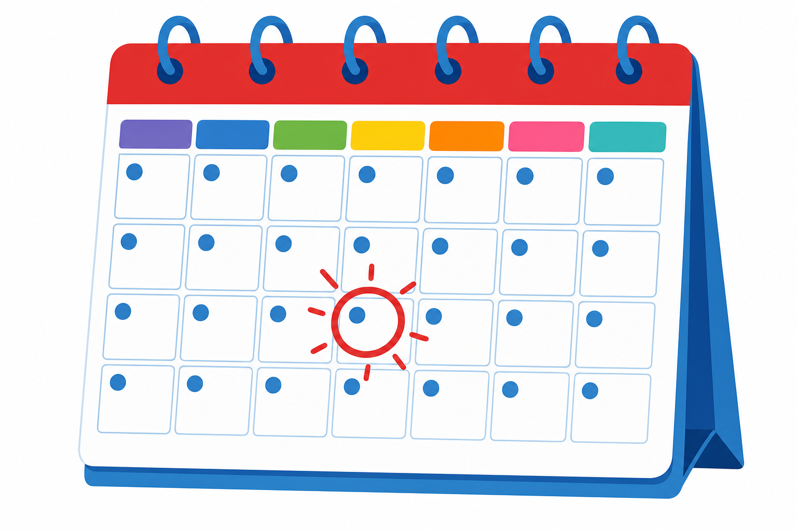

1
jednostki kalendarzowe
календарні одиниці

📘 Co to jest? Що це?
Kalendarz układa dni w tygodnie, miesiące i lata — pomaga planować.
Календар впорядковує дні в тижні, місяці й роки — допомагає планувати.
⭐ Zapamiętaj Запам'ятай
doba · tydzień · miesiąc · rok
1 тиждень = 7 днів. Запам'ятай дні: пн, вт, ср, чт, пт, сб, нд.
⚠ Nie pomyl Не плутай
- dobatydzień
- miesiącrok
- jednostki kalendarzowe = coś innegoKalendarz układa dni w tygodnie, miesiące i lata
✅ Przykłady Приклади
- dzień, tydzień, miesiąc
- 7 dni = tydzień
- 12 miesięcy = rok
- 365 dni w roku
- pon–nd — tydzień